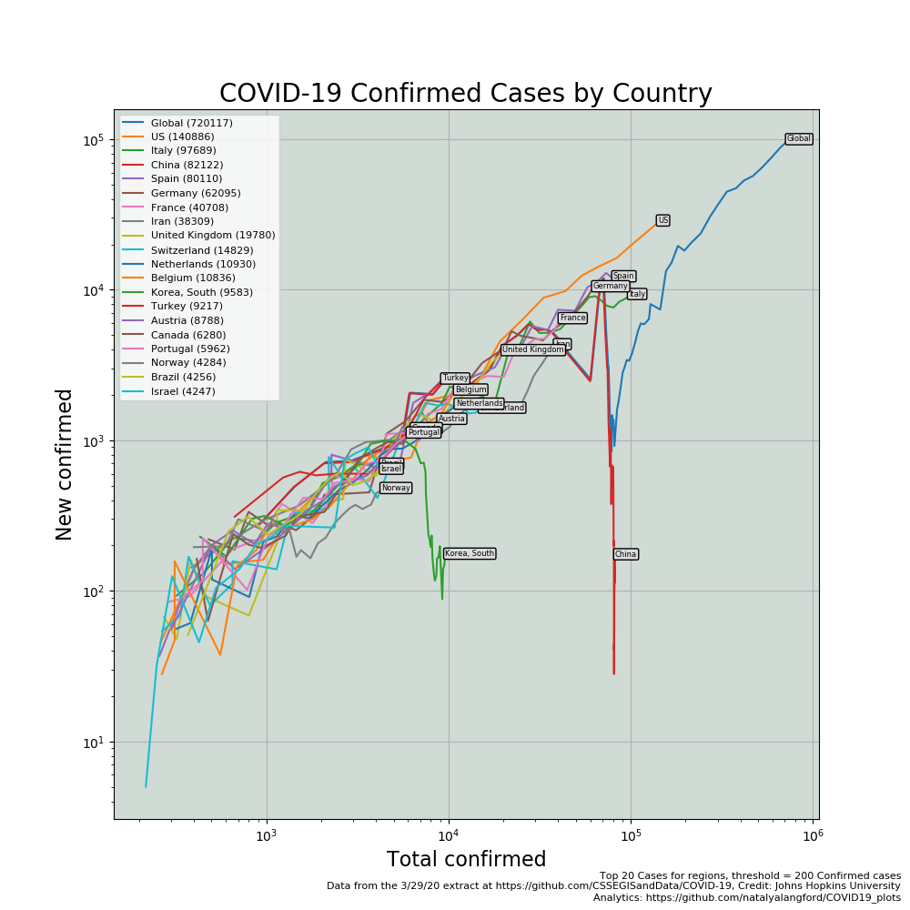

This daily report is based on the latest time series extracts provided by Johns Hopkins University for global data and from USA Facts for US data. Unfortunately, the US data lags the global data and lags typical reported data. I am still looking for a more timely source. JHU indicates they will have the US data posted, but still not available on their GitHub site. I assume they are working on some cool automation to distribute accurate and timely data. We will update our toolset when available.
